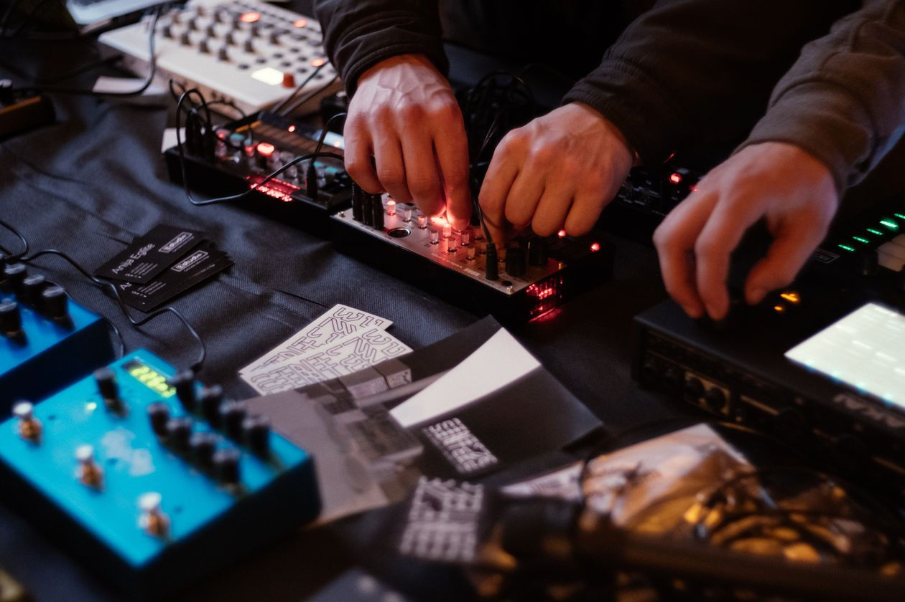

The machines, the paperwork, in that order.
How the studio is set up, exactly what a delivery contains, and what the licensing words mean — written for producers, developers and music supervisors who would rather read it here than extract it over email.
The short version
I'm Renata Voss, a composer and producer in Leipzig. I spent six years as a live sound engineer — mixing other people's synth bands in rooms where a failed patch cable is a public event — before moving into game jams in 2018 and then full-time scoring and sync work in 2019. The live years are why this studio is run the way it is: everything is written down (patches, loop points, loudness figures), everything is printed to audio early, and deadlines are treated as part of the composition.
The music is synthwave because the instruments are. Every cue starts on analogue hardware — voltage-controlled oscillators drift, filters behave differently at 2 a.m., and those imperfections are the sound clients are actually hiring. The DAW is used for editing, arranging and delivery, not as the instrument. The patch player on the home page is the honest demo of that workflow: same patches, same note data, smaller oscillators.
How I work with clients
Fixed written quote before work starts. A demo sketch within 48 hours of the brief, free on trailer and game commissions, because direction changes are cheap at sketch stage and expensive at master stage. Timed revision notes, not open-ended calls. And one named contact — me — from brief to delivery folder.

Gear, listed as working tools.
Categories rather than a collector's inventory — this is what each unit is for in a commission. Specific models are in the patch notebook and available on request; the sound they make is in the player.
| Unit | What it is | Its job in a cue |
|---|---|---|
| Analogue polysynth | 6-voice VCO polysynth, 24 dB ladder filter | Pads and chord beds — the detuned-saw stacks in every patch sheet |
| Analogue monosynth | Single-oscillator + sub bass synth | Basslines. The square sub under the saw is this machine's signature |
| Drum machine | Analogue voices + sample hybrid | Kick and hats are analogue; snare is layered with recorded noise bursts |
| Modular system | Small Eurorack case — sequencers, utilities, effects | Sequencing the basslines and the generative details around the arp |
| Tape echo & spring reverb | Analogue delay and tank reverb | The ⅜-note echo on arpeggios; the space around title themes |
| Hybrid desk & converters | Analogue summing mixer, 24-bit / 48 kHz conversion | Hardware passes are summed analogue, then printed once, cleanly |
What lands in the delivery folder.
- Masters — 24-bit / 48 kHz WAV, plus MP3 references. Trailer and broadcast work delivered to the spec of the outlet, stated on the delivery note.
- Stems — drums, bass, pads, lead/arp, FX, printed from the same takes as the master so they sum back to it. Game work adds intensity layers as separate stems.
- Loop documentation — for every loop: start and end points to the sample, bar count, tempo, and tail behaviour (printed tail file or clean cut), in a plain-text LOOP-NOTES file in the folder.
- Loudness figures — streaming masters at −14 LUFS integrated, true peak −1 dBTP; game loops at −1 dBTP true peak; broadcast titles to EBU R128 (−23 LUFS ±0.5) or ATSC A/85 as required. Measured figures are printed on the delivery note, not estimated.
- Versions — cutdowns (30 s / 15 s), stings and instrumentals as contracted, each named by a consistent scheme: TITLE_version_length_key_BPM.wav.
- Cue sheet data — title, duration, writer and publisher details supplied in the format your PRO or production office needs.
Licensing, in plain language
A sync licence is permission to pair a recording with picture — a game, a trailer, a video. It covers two separate things that are usually licensed together here: the master (the actual recording) and the publishing (the underlying composition). When you license a catalogue track from this studio, both come from the same person, so there is one signature and no second clearance to chase.
Non-exclusive means the same track can be licensed to others; exclusive means it cannot, for the agreed term and territory — which is why exclusivity is the biggest single mover in the rate card. Term is how long, territory is where, media is what it can appear in. A licence that says "online, one year, worldwide" cannot quietly become a TV advert; new uses are licensed separately, as the Chrome Orchard ident was.
Buyout vs royalty. A buyout pays once and ends the matter — common for game scores and trailer cues. A royalty arrangement pays a smaller fee up front and a share when the work earns — common in broadcast, where the writer also keeps performance royalties collected by their PRO for TV plays. Unless a contract says otherwise in writing, the writer's PRO royalties stay with the writer; that is standard practice, and it is stated here so nobody is surprised later.
Turnaround
- Demo sketch: 48 hours from a complete brief
- Trailer cue: 5–7 working days typical
- Title theme package: 2 weeks
- Game score: scheduled per milestone, agreed up front
- Inside 72 hours end-to-end: +25% rush fee, agreed before the clock starts
Revisions
Two revision rounds are included in every commission fee. A revision round is one consolidated set of timed notes, answered within two working days. Direction changes after the sketch is approved — new tempo, new key, new arrangement — are quoted as new work before they are started, never billed as a surprise.
Reading about it is the slow way.
The patch player is on the home page. Five cues, one live filter, no audio files.